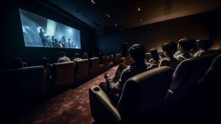
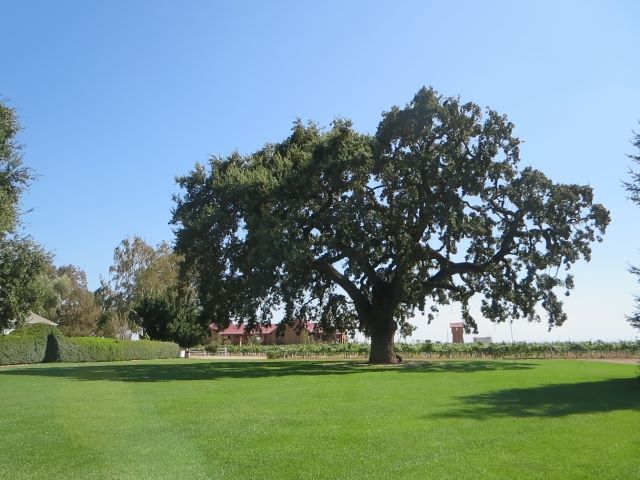

Now and Then |
 |
初めて”映画館”で観た映画はＥ.Ｔ.でした
皆さんは何だったか覚えていますか？
|
|
映画は好きだけど、
映画館へはほとんど行きません。
話題の新作映画というフレーズにも、
映画館特有の感動とか迫力とかにも、
それほど興味が湧かなくて‥‥。
|
 |
小説とその映像化作品は、”全くの別物”と思っています。
原作が好きな程、やり切れなくなります
でも、”ハリーポッター”は奇異なファンタジーの世界観を
高度な映像技術で見事に具現化してると思います。
|
|  |
詩が大好きな曲で、ドーンの「幸せの黄色いリボン」があります。
刑期を終え、かつての妻のもとへバスに乗って向う主人公と
そのバスドライバーとのやり取りを歌ったものです。
もし、まだ自分のことを待ってくれているなら
家の樫の木に黄色いリボンを結んでおいて欲しい
と書いた手紙を妻に送ったことを話します。
今もあの家で待ってくれているなんて全く思えないのだけど、
でも、万が一にも待っていてくれたなら‥‥。
そこで、彼はバスドライバーに頼みます。
「あの次の角を曲がるとその樫の木が見えるはずなんだ。
でも、自分ではとても見る勇気ない・・・・・
だから、運転手さん、俺の代わりに見てくれないか？」
そうして、バスドライバーが祈る気持ちで目にしたのは、
”黄色いリボンだらけになった樫の木でした！”
というそのまま短編小説に出来そうな曲です。
後日、この曲に着想／製作された映画があることを知りました。
山田洋次監督、高倉健主演の「幸福の黄色いハンカチ」です。
”こんな物語になるんだ”って思うと同時に、
何となくですが、少し”違和感”を感じた覚えがあります。
|
映画の醍醐味といえば”ラストシーン”ですよね。
想い入れが強い分だけ、終わり方に対して賛否両論（好き嫌い？）あったりもします。
そんな中で、”大どんでん返し”のラストを迎える映画もあります。
”スティング”とか”蒲田行進曲”が思い浮かびますが、
やっぱり、”蒲田行進曲”かな。
エンディング時、本当に、一瞬意味が分からず、
”これって劇中劇だったのか！”って理解すると、
”どういうこと？”、”今までの話は何だったの？？”っていう感じです。
何はともあれ、”つかこうへい作品”なのです。
ついでに、関係ないけど、彼の舞台劇の”熱海殺人事件”のラストも好きです。
ダンヒル以外受け付けない彼が、差し出されたライターの火を受けて、
”良い、火加減だ！”って。
|
|
|
映画と音楽は切り離せないものですが、記憶に残る曲はありますか？
私の場合だと、映画『ボディーガード』の主題歌”I Will Always Love You”ですね。
劇中でもホイットニー・ヒューストン自身が歌っていて、その歌唱力と相まって素晴らしい曲です。
ところが、劇中において、傷心して田舎に帰ったケビンコスナーがレストランバーへ入っていくと、
男性ボーカルのカントリー調のこの曲が流れてきます。
カントリー調の曲と詩とボーカルが表す心情がとても印象的なシーンで、この曲が記憶に残りました。
後で知り納得しましたが、この主題歌、実はドリーパートンのカントリー曲をカバーしたものでした。
この他にも、『ワーキングガール』の”Let The River Run”も良い曲です。
|